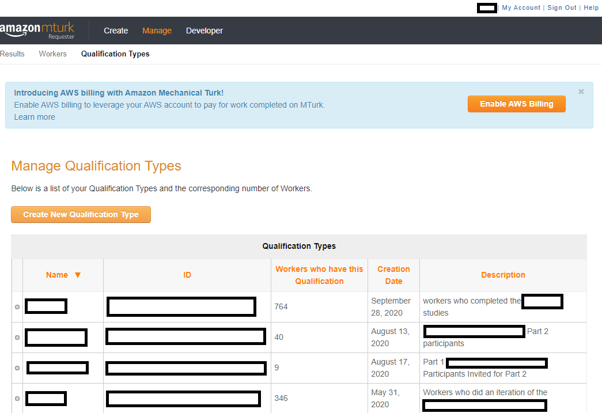
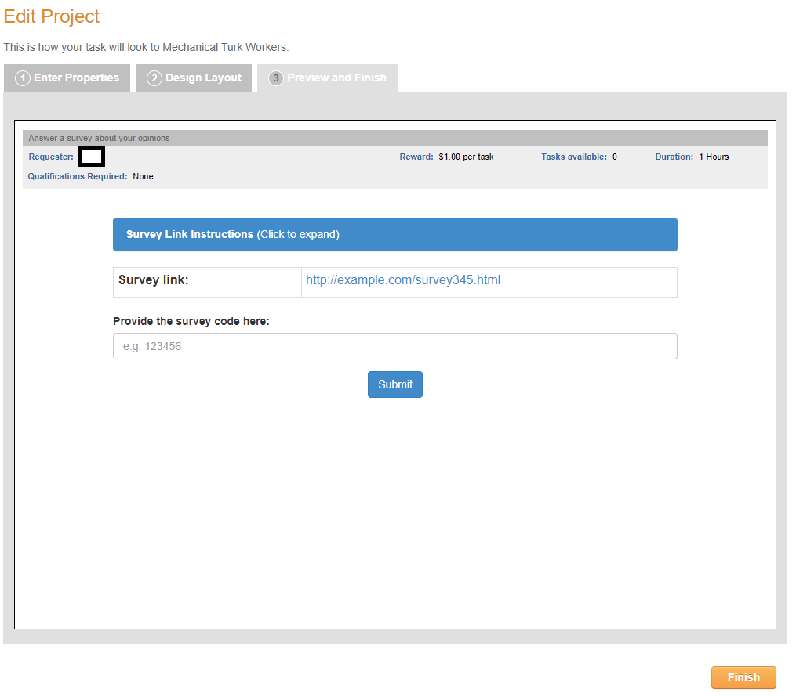

Module 1: Crowdsourced Experiments
- Identify the lingo and demographics of Amazon Mechanical Turk (MTurk)
- Describe the benefits and pitfalls of crowdsourced research
- Diagnose what sample MTurk experiments do wrong and what they should do instead
- Synthesize common tips for running MTurk participants into your research
Welcome!
This course is designed for any researchers - whether in academia or industry, or PIs, post-doctoral researchers, graduate students, undergraduate students, or post-bac RAs - who wish to use crowdsourced populations to run their social science experiments online. As part of this objective, we will go over the many ways one could program a survey or experiment, but we will not go over the basics of how to design proper surveys (e.g., social science research methods) or what makes for good experiments. We will also not cover every little detail about JavaScript, HTML, and CSS. This course is more applied and advanced than a standard Introductory level course, but we hope to nonetheless interest you in pursuing more advanced customization of experiments, websites, and more.
What are crowdsourced experiments?
Crowdsourcing, according to Wikipedia, is "sourcing model in which individuals or organizations obtain goods and services, including ideas, voting, micro-tasks and finances, from a large, relatively open and often rapidly evolving group of participants." For example, Wikipedia is a crowdsourced encyclopedia online, with participants from all around the world contributing to the body of knowledge (a common good). This repository is meant to be crowdsourced, as a Github page that others can edit in time as more information becomes available. That is, this course is self-paced for all students, but students can also become collaborators over time.
In the realm of research, as Stewart, Chandler, and Paolacci (2017) discuss, researchers use online labor markets to match interested participants who can earn money to complete research studies. There are a number of crowdsourced sites: Prolific, Lucid, Clickworker, Microworkers, and CrowdWorkers (see this paper for a discussion of crowdsourcing sites in Japan, like Crowdworkers). There are likely more than are listed here, although not all will be particularly well known (also sometimes called online panels). This particular course focuses on Amazon Mechanical Turk, one of the most popular crowdsourcing sites used in the United States (please also see Wishlist).

What is and who uses Amazon Mechanical Turk (MTurk)?
Stewart, Chandler, and Paolacci (2017) suggest that in 2017, 24% of articles in Cognition, 29% of articles in Cognitive Psychology, 31% of articles in Cognitive Science, and 11% of articles in Journal of Experimental psychology: Learning, Memory, and Cognition mention MTurk or another crowdsourced experiment site, highlighting that there is strong demand for using these platforms to recruit participants. This demand has likely only increased given work-from-home attitudes and the shift to virtual platforms during the COVID-19 pandemic, especially given the large benefits of crowdsourcing studies.
Why is MTurk so popular? Crowdsourcing sites like MTurk are simple to use, have great flexibility, and can recruit a lot of participants at a relatively cheap rate. Another major benefit is that crowdsourcing sites tend to yield results much faster than running participants in person. You can take a look at the Geographic distribution of MTurk participants. There is a pretty decent MTurk pool for researchers in the United States, and there are about 100K-200K unique participants on MTurk, with 2K-5K active on MTurk at any given time and about half of the population changing within 12-18 months.
In 2015:
- ~80% of the MTurk participants were from the United States, and the other 20% mostly from India.
- ~50% were 30-year-olds, ~20% were 20-year-olds and ~20% were 40-year-olds.
- ~40% were single, ~40% were married, and ~10% were cohabitating.
- The median household income was ~$50K per year for U.S. participants.
In other words, a typical MTurk participant lives in the U.S. or India, is 20-36 years old, earns $25,000-60,000 a year (depending on where they live), and thus matches the profile of a (procrastinating) graduate student or post-doc.
Of course, these demographics have likely changed to some extent. This app is meant to show you MTurk participant gender, year of birth, marital status, household size, and household income data on an hourly, daily, or day of week basis (see blog post).
Demographically, MTurk participants tend to be more diverse than college student samples, but are not representative of the U.S. population as a whole (Hispanics of all races and African-Americans are under-represented), and are younger, more educated, less religious, more liberal, and more likely to be unemployed or underemployed and have lower incomes than the population as a whole (see Stewart, Chandler, and Paolacci (2017) for review). Psychologically, MTurk participants score higher on learning goal orientation, need for cognition, and traits associated with autism spectrum disorders, report more social anxiety and are more introverted than both college students and the population as a whole, are less tolerant of physical and psychological discomfort than college students, and are more neurotic (see Stewart, Chandler, and Paolacci (2017) for review). (One paper, however, suggests that MTurk is more representative of the U.S. population than a census-representative web-panel in the evaluation of security tools and that differences between MTurk and the general public are due to differences in factors like internet skill.)
There are also important differences that come specifically from crowdsourcing. When using MTurk or other crowdsourcing platforms, you are usually posting your study/task into the 'ether'. Your study is available on a first come, first served basis, and that incentivizes certain behaviors. For example, some participants have become good at taking advantage of the platforms to find available studies and especially the ones that pay the best. In other words, participants may vary on their level of savviness and connectedness with other site participants, who may inform friends about a well-paying study. They'll definitely also vary in characteristics like personality, ethnicity, mobile phone use, and level of experience as a function of the time of day when a study is posted. Below in the Unknown Frontiers section, I discuss the impact of COVID-19; one potential impact is the particular demographics of your study. Moreover, as stated above, MTurk has both a U.S. and India population; at certain times of day, the U.S. population is more likely to be asleep, while the Indian population is more likely to be awake and active, and vice versa (see demographic app targeter above for an example). Arechar, Kraft-Todd, and Rand (2017) have suggested that participants who do studies on the weekend and later in the night are less experienced with online studies. Participants who complete a study early may also differ personality-wise from those who complete this later--although this may not be specific to MTurk or crowdsourcing. I was (informally) told that this is also true of psychology pool participants, who are more conscientious earlier in the semester than later, when we're closer to the deadline for participation.
You can also imagine ways in which this crowdsourcing behavior might impact design considerations. If participants are searching for tasks to complete, especially ones that are well-paying, they are also likely to prioritize studies that are not long and arduous--and as researchers, we have to take this into account. That means crowdsourcing tasks tend to be shorter. Participants who are doing online studies are also likely to be multitasking (e.g., not being alone, watching TV, etc.). That may differ from in person studies in a lab, but that may also depend on the extent to which a lab enforces a 'no-phone' rule etc. That doesn't mean behavior isn't similar (more on that in a bit). But it does mean that your instructions have to be REALLY clear. In person participants can ask you questions if they don't understand what they're supposed to do; online participants cannot.
How to use Amazon Mechanical Turk
To use MTurk, you will need to become familiar with the lingo of the site.
Worker - Participants on the site; workers will complete a "HIT" in exchange for compensation.
Requester - You, the researcher; requesters will post a "HIT" for workers to complete.
HIT (Human Intelligence Task) - The study/task; the requester posts a HIT for workers to complete.
Batch - A HIT is posted in "batches". Amazon charges a 20% fee for batches of greater than 9 HITs (meaning 9 participants), unless you use an additional trick (more on that later). If you want to run 18 people, you'd likely post 2 batches of 9 HITs.
Approval/rejection - When a worker completes a HIT, requesters can choose whether to approve or reject the HIT. Approving means you're compensating the worker; rejecting means you're NOT compensating the worker. I approve almost all HITs. If I reject a HIT, it's usually because someone is at or below chance level in my cognitive task, suggesting they didn't even try or were button mashing.
HIT approval ratio - Total Approved HITs / Total HITs completed. According to Stewart, Chandler, and Paolacci (2017), until a worker completes 100 HITs, a worker has a 100% approval rating. Workers are very invested in maintaining high HIT approval ratios, because they can be disqualified from certain HITs if their approval ratio is too low.
Reward - The amount of money/compensation workers receive after their HIT is approved. Note that Amazon takes at least a 20% cut on the reward rate. If you pay a worker $3 to complete your HIT, it actually costs $3.60 per participant.
Qualifications - Criteria that requesters can impose on a HIT and that determine worker eligibility to accept a HIT. Basic Qualifications (accessible to all requesters) include Location, # of HITs completed, and HIT approval ratio (e.g., restricting to U.S. workers who've completed at least 1,000 HITs and have a >95% approval ratio). Premium Qualifications (i.e., Amazon charges requesters an extra 20% for these) include other sorts of demographics (e.g., "18-29" age range). Requesters can also create their own Qualifications, like ensuring that workers don't do their task more than once. Workers can become a Master Worker, which Amazon opaquely suggests are people with high approval ratings, but it's unclear what qualifies participants to reach Master level. Using the Master worker Qualification also costs an additional 5% fee.
TurkOpticon, TurkerNation, & TurkerView - Sites where workers can post reviews of a requester + HIT (TurkOpticon) or a particular HIT (TurkerView). Generally speaking, I think folks have transferred over to TurkerView, as I have more reviews on that site than I do on TurkOpticon. Also, generally speaking, my reviews are more favorable on TurkerView, so there may be a split between who uses what site. TurkerView also includes a forum for workers to discuss HITs.
CloudResearch, Prime Panels, MTurk Toolkit - CloudResearch is (I think) a subsidiary of MTurk, what used to be "Turk Prime." CloudResearch has a MTurk Toolkit that allows you to customize the use of MTurk features, such as particular demographic features, and has a much nicer graphical user interface than MTurk (e.g., you can email participants with this interface, whereas on MTurk, you have to use a special programming interface - more on that in Module 4). Prime Panels is a research service where other folks who work at Amazon will recruit your participants for you. This is particularly helpful if you want to recruit groups that you cannot reach just by using the Toolkit. Both Prime Panels and MTurk Toolkit cost more to use than MTurk at large, because they are specialized sites.
Block - Requesters can block workers from doing any of their future HITs. After an unspecified number of blocks, workers are banned from the site. I would HIGHLY recommend NEVER blocking a MTurk worker unless you believe they have violated the site's standards (e.g., by having more than one account). There are ways that you can ensure people do not do your task again if you find their work unsatisfactory (e.g., Qualifications)--and you can do that WITHOUT adding a "negative mark" to their account. Since we do not know how many blocks result in expulsion from the site (MTurk is not transparent about this), it is better to err on the side of caution and humanity.
At this point, you may be wondering where MTurk even is. There are two sites: the main regular site and the developer sandbox site where you can sign on as a requester or worker. The sandbox site looks identical to the main MTurk site except for the large orange header at the top. That means when you're ready to post your HIT, you can get the survey link code from your project in sandbox and thus make your project look the way you want before posting to the main site.
Let's take a look through the site. Below we have screenshots for "Create -> New Batch with an Existing Project", "Create -> New Project", "Manage -> Results", "Manage -> Workers", "Manage -> Qualification Types", and "My Account" page. The Developer page essentially links to the sandbox page and walks you through ensuring you can use the sandbox site to ensure your task looks OK. Here is the screenshot of the create projects page looks like:
{kind=link}
{kind=link}
{kind=link}
Above, we can see what the site looks like when you already have Projects created. The site will tell you when you created and last edited the project and let you immediately publish a batch for the project, edit its settings, copy the project (which could be useful if you like your layout), or delete the project. MTurk workers will only see the Title of your project, but not your Project Name, which is only seen by you. Here is the screenshot of the new projects page looks like:

Above, we can see what the site looks like when you need to create a new Project. There are several templates available, depending on what you might need. Most frequently, in the social sciences, we will use the Survey Link or Survey option, and I will go over editing those templates in the typical social science tutorial. Here is the screenshot of the batches page looks like:

Above, we can see what the site looks like when you've published a batch. When you're still waiting for workers to finish your study, the batch is in the "Batches in progress" section. When you've either canceled the project or workers have all finished the project, the batch will move onto the "Batches ready for review" section. Here is the screenshot of the workers page looks like:

Above, we can see what the site looks like when you're looking at particular workers. You might find that you need to bonus one particular worker, and you lost track of where they were in a batch. You might have forgotten to update a particular worker's Qualification. You can find the worker here, along with their lifetime, 30 day, and 7 day approval ratio; that would tell you how often you've had a particular worker do your tasks. Your total worker file can also be downloaded as a .csv file and uploaded as well. This is how you would "update" Qualification scores on a massive level. Here is the screenshot of the qualifications page looks like:
Above, we can see what the site looks like when you're looking at the Qualifications you've created. Each qualification has a particular name/code and a unique ID, plus a description so that you and workers know what the Qualification means. As stated above, you can either click on a particular worker and assign them a Qualification or you can download your worker file .csv and then put a value in the column associated with each Qualification. As you can see above, these Qualifications are meant to help you exclude participants who have already done past studies of yours (whether they're good workers who you just don't want as repeats or bad workers that you never want to have do your studies). Here is the screenshot of the payments page looks like:
Finally, above, we can see what the site looks like in reference to your own account page. Below, I will mention how to create your own account. Here, you can see how much money you have in your account as well as your account's settings and login information. You can either put a prespecified amount of money into your account or when you're creating a batch, simply pay for the exact amount of money associated with that batch. You will need to keep track of the transaction history if you need to turn in receipts to a particular funding institution or accounting.
What does the output look like? Well, it sort of depends on what your particular task is and whether you're relying on what Amazon provides you as an output vs. having a web server of your own. Here is a screenshot of "manage batches" and a particular batch for survey link project:
{kind=link}
In the above image, you can see even more lingo to learn! First, you can see that each worker and each HIT posted typically have unique identifiers; I blocked these out of the screenshot, because you could then identify who did my task. Each worker has a lifetime approval ratio associated with a particular requester's account. In the above screenshot, all of workers show 1/1, indicating they'd only ever done one HIT for me, and I approved them on this HIT. You can filter out the HIT results to look at workers who you've already approved or rejected, or folks who have just submitted the HIT (and therefore need you/the requester to approve/reject the HIT). The screenshot above is filtered for approved HITs. There are also 2 particular fields that I have included: surveycode, which is a function of the particular project I run on MTurk where I ask each worker to submit a unique code that they receive at the end of the survey as proof of survey completion, and Input.Filler, which is a part of the method I use to get around the 20% fee for batches >9. Finally, you can see options to "Upload CSV" and "Download CSV". The 'csv' file is a file that lists all the workers in your particular batch and could include other data, depending on how you've coded your study. Here is what this particular .csv (comma separated values) file looks like:
{kind=link}

And even more lingo! Each person has a unique HIT ID, a unique Worker ID, and a unique Assignment ID. I will go over these terms in more depth in the typical social science project section. Title is the name of your study; description is a brief blurb that workers will see before clicking on your HIT; keywords are the few terms workers will see related to your work. Creation Time is when you posted your batch; expiration is when the batch will naturally expire. Assignment status indicates whether the requester has rejected or approved the HIT, or whether they have yet to do so (i.e., submitted). SubmitTime is when the worker submits their HIT; autoapproval time is when a worker would be automatically approved for submitting the HIT. Approval/Rejection time are when you approved or rejected the HIT, and if you do reject a HIT, you are required to tell the worker why. That is listed in the Requester Feedback column. In addition to a Lifetime Approval Rate, you also are shown the Last 30 Days Approval Rate and Last 7 Days Approval Rate, which may help you notice if any eligibility criteria (so that people don't do your task more than once) is working. For example, if it wasn't and assuming that you've only posted the same study in the last seven days, you might have a worker with 1/1 in the last 7 days approval rating in addition to the current HIT, suggesting your exclusion method did not work. The rest of the columns are all various durations and other information you adjust when creating your project. The most important information is the HIT ID, worker ID, and assignment ID as these unique identifiers will make it possible for you to link different sources of information (e.g., data on your survey to data on the actual MTurk interface).
You may be wondering: well, what's the point of downloading these .csv files? Sometimes people code their studies so that these files have their data; that would amount to an extra column, much in the way that my study has an "Input.filler" column because I do something extra to my project code. Sometimes, you may also accidentally reject someone's HIT or learn that they experienced an error while doing the study, and you want to compensate them. If that's the case, you would just put an "x" in the Approve column at the end there and then click "Upload CSV" on the MTurk interface, inputting your file. That helps you undo the error you committed.
Well, with so much information, what sorts of things might you report after running an MTurk study? You should definitely report 1) any qualifications you've imposed and 2) any properties of your particular HIT (reward, stated duration). You may also want to report the time of day you posted HITs and the date/days on which you posted HITs, especially if researchers try to meta-analyze how much these may impact results in the future. Here is an example description of using MTurk in a published study:
"Eighty-one Amazon Mechanical Turk (MTurk) workers consented to participate for a $3.85 ($0.13/min) fee in accordance with the policies of the Duke University Institutional Review Board. Nine participants were excluded because of poor accuracy on the LP (<65%; see instruction paragraph below) and nine participants were excluded because of incorrect category-response associations on the post-test questionnaire (see post-test section for more details), resulting in a final sample size of sixty-three (mean age = 32.1, SD = 8.7; 31 female, 32 male; clustered n = 31, non-clustered n = 32). This level of exclusions is consistent with research suggesting that attrition rates among web-based experiments varies between 3 and 37% (cf. Chandler et al., 2014).
Workers were told the approximate length of the study and the number of the tasks that they had to complete. Workers were asked to take no longer than 4 min for any of the breaks that occurred during the study (e.g., between task phases). Finally, they were also informed that they needed to get above 65% accuracy on the LP for compensation, and that if they got above 90% accuracy, they could earn a flat $1 bonus. Nine workers earned the bonus. Workers who participated in one experiment were explicitly preempted from participating in the others. All exclusion criteria remained the same across experiments."
What's wrong with this description? Well, it gives you a sense of what the HIT page looks like, but a more transparent version would have included (e.g., in the Supplementary Text) the exact preview of the HIT and mentioned what days and times on which participants were run. This was one of the first studies I'd run, and I hadn't included a Location: United States Qualification, which I now do (especially since NIH grants are typically based on U.S. census reports, with certain demographics specified). Personally, I also tend to run participants between 9 a.m. to 5 p.m. EST and cancel any "batches" that aren't finished by 5 p.m. EST to ensure that participants who are not in my desired location but are getting past Amazon's Location Qualification will not participate in the study. However, I didn't include this guideline in the above description, either, and that is a problem if someone wanted to directly replicate my study.
Additional Resources: Tutorial: Reconciling Worker Responses (showing more of how that output .csv file could also have data); Tutorial: Managing Results with the Requester Website (more details on interacting with the interface/batches); Tutorial: Identifying Workers That Will Be Good at Your Task (more details on creating qualifications and thinking about reasons for approving/rejecting work); Mason and Suri (2012) (for more details on terminology).
Amazon Mechanical Turk accounts
How do you sign up for an MTurk account? You will want to sign up as both a requester and worker; you will post your HITs as a requester, but you will also want to test out your own tasks BEFORE that, as a worker (on the developer site). (You may also want to try out a few tasks as a worker to get a feel for what your participants generally experience.)
First, you should sign up for an Amazon Web Services (AWS) account and eventually link this to your MTurk account. You can find that tutorial here. This isn't 100% necessary to use MTurk, but if you end up going all the way through these Modules, in Module 4, we will go over how to use MTurk with code, and the linked tutorial will make that possible.
Next, you can sign up for a requester account following this tutorial ("Step 2") or Mason and Suri (2012) (under "Requesters"). If you followed the above tutorial on the AWS account, you should be able to link the two accounts.
Should you sign up for your own account or an account that represents your lab/company at large? That depends on your goals.
If you're at a company or a large lab, you may want to have one central account that everyone can access. This means that it is easy for your financial manager (e.g., a lab manager) to access the receipts associated with running studies. It also means that you will have to set your policies on how to treat MTurk workers and run your studies together as a lab, reducing individual variability.
On the other hand, having one account means that if one person has a boring study, the entire lab has been reviewed (negatively). That means you might lose ranking even when it's not something that you specifically do.
Yet, if you create your own accounts, it can make it hard to keep track of all the receipts associated with different accounts. At the same time, you'll only be affected by how you treat MTurk participants. Part of this may depend on what IRB (Institutional Review Board) protocol you have: that is, what do the standardized ethical procedures at your institution suggest? If it's for the entire lab (an umbrella IRB), you may need a lab account; if you have your own IRB, then you could use your own. There are negatives and positives to each choice.
Please remember to evaluate the subsection with the Google Form below so this can be improved in the future (you can find the results from the Google Form here).
Designing Online Studies
This section will primarily go over the ethics of crowdsourced studies and how to post the most common type of social science survey.
Running social science research on MTurk
One thing you may be wondering is how Amazon is able to host this crowdsourcing site, handling a lot of money. With this crowdsourcing site, workers are considered independent contractors ("3e"), although payment standards will change according to each country's regulations. Being an independent contractor means that they are not employees of any Requester or MTurk at large and do not get the benefits therein. The ethics of this and how workers are treated has even attracted public press (New York Times, The Atlantic; Science, Scientific American, blog post).
Payment is an ethical issue (Cantarella and Strozzi, 2018; Goodman, Cryder, and Cheema, 2013; Fort, Add, and Cohen, 2011; see also Morrissey, Yamasaki, and Levitan (2019) for a discussion on how we treat workers as "invisible"). Moss, Rosenzweig, Robinson, and Litman (2020) reported that MTurk participants don't find most requesters abusive or MTurk stressful and that they appreciate its flexibility and the financial incentives, but that does not absolve researchers from paying an ethical amount for our studies to be performed online. How much will you pay participants? One thing that differentiates MTurk from other crowdsourcing sites (like Prolific) is that it does not have a minimum payment rate. So you need to establish a set standard for yourself in terms of how you're paying participants and write that into your Institutional Review Board protocol. For example, will you pay participants the equivalent of the federal minimum wage or your in-person participant rate and calculate the reward/compensation based on your approximate # minutes for the task?
Data quality is not typically sensitive to compensation level for American workers (Buhrmester, Kwang, and Gosling, 2011; Crump, McDonnell, and Gureckis, 2013; Mason and Watts, 2010;Litman et al., 2015), and greater payment could lead to quicker data collection (Mason and Watts, 2010; Berinsky, Huber, and Lenz, 2017) and reduce data attrition (Crump, McDonnell, and Gureckis, 2013). Greater payment could also act as an incentive to spend longer on tasks with greater demands on our cognitive effort (Aker et al., 2012; Ho et al., 2015), but it could also attract only the most keen workers and crowd out those who aren't as savvy at using the site (Casey, Chandler, Levine, Proctor, and Strolovitch, 2017; Stewart et al., 2015).
Here is part of a sample consent form for participants:
About the Study: This MTurk task is research being conducted by the XX Lab at XX University. The purpose of this study is to find out more about _____________. Expect to spend XXX [adjust according to specific experiment] to complete this study. If you choose to take part in this study, you will be completing a task that involves ___________. The images and words will appear in brisk succession and we ask that you identify their location as quickly and accurately as you are able to. We will also ask you common demographic questions about yourself.
Voluntariness: This study is completely voluntary and you can withdraw from this study at any time by closing your Internet browser window.
Compensation: You will receive $XX [adjust according to specific experiment] for your participation. We will screen your responses prior to compensation. If you do not complete the task, or we feel that you completed it to an unsatisfactory standard (ie. you do not follow the instructions), you will not be compensated.
How Confidentiality Will Be Maintained: Amazon Mechanical Turk will provide us, the researchers, only with your responses. We will not have access to your personal information.
Risks/Benefits: There are no expected risks or benefits to you for participating in this research study.
Contact Information: If you have any questions at this time or during the experiment, please feel free to ask. If questions arise after the experiment, you may contact the primary investigator, XX (emailaddresshere or phonenumberhere). You may also contact Human Subjects Protection at irbemailhere for questions about your rights as a research subject.
Please click to indicate your consent to participate in the study.
Options: I have read the above consent form and agree to participate in the study.
I do not agree to participate in the study. (Selection of this option will exit the participant from the survey.)
As may be evident from looking at this consent form, payment is not the only ethical issue that can arise from using a crowdsourcing platform. One question is: is it enough to have participants merely click a button to indicate consent? To close out of the browser if they do not consent? For now, these are the accepted standards, but that might change in the future, especially to make way for participants to request the deletion of their data. After a worker finishes a HIT, for example, it leaves their current timeline, and the site itself doesn't necessarily promote accessing old tasks -- do workers even believe they can delete their data later or withdraw consent afterwards?
Finally, there is also the ethics that arises with all science. For example, there is the Replication Crisis or Credibility Crisis. Folks vary in their proposed solutions, but one proposed solution is to have researchers replicate their work more frequently. With crowdsourcing sites making running studies both easy and quick, researchers can test their ideas more readily. Whether this is ultimately good for the crises is up for debate, but it undoubtedly enables replication. You must report all of the details we've discussed in your study. It is important to report all of these considerations whether in a paper or on the wiki with your open materials, especially if other researchers want to directly replicate your work (see Paolacci and Chandler, 2018 for commentary).
Additional reading: Williamson, 2016; Gleibs, 2017; “Guidelines for Academic Requesters†provided by the MTurk community (summary).
A typical social science project on MTurk
In the social sciences, probably the most common projects that we will run on MTurk are the "Survey" and "Survey Link." Survey Link is probably more common, because it's easier to use another platform (e.g., Qualtrics, Google Forms, etc.) to customize the survey than to do that specifically in MTurk. So, let's take a look what "Create -> New Project" looks like. Here is the first screenshot of that page:
{kind=link}
In this first part, we are on the tab "Enter Properties" for the Survey Link project template. The "Project Name" is private, like your own code for your study. If you are using a lab/company account, you would probably need to make this specific enough that your colleagues know it's your study and they shouldn't touch it. However, the "Title" is public and visible to workers. Typically, I've made my title indicate the instructed goal of each task (e.g., Categorizing XYZ), and in the "Description", I've gone into a little more detail (e.g., that they're categorizing XYZ by pressing keyboard buttons). You may also end up including the description of your study as per your IRB guidelines. "Keywords" will depend on the topic of your study and like the Description and Title, are visible to MTurk workers. Here is the second screenshot of that page:
{kind=link}
Next, after you've described your survey, you will be setting up some of the details. Reward per response is the compensation for each individual worker, not including the 20% fee that Amazon takes. So, if you're paying a worker $3 for your study, you'd still enter $3 here, but when you go to actually publish a batch of the survey, one response will cost you $3.60. Number of respondents is the number of "assignments" per batch of your project; that is, each assignment is unique just as each worker is unique, so within one batch, no worker can do more than one assignment. Remember, too, that I've said that you get an extra 20% fee for batches greater than 9? That's where "number of respondents" comes in. You cannot have >9 here unless you want to get charged extra. Time allotted per Worker is referring to how long you expect your survey to take. I generally give workers 3x the amount of time I think it will take - i.e., putting 1 hour for a 20 minute survey. This is because people are multitasking, but also doing multiple HITs and if they need to take a break, having more time to complete the HIT creates a less stressful environment. Survey expiration date - to be honest, I've never had to have a survey expire before it's been completed. That is, when I want to make sure the study is only online from 9 a.m. to 5 p.m. EST, I will 'cancel' the batch rather than rely on the expiration date here. Finally, auto-approval time: how long will it take you to look at your results and decide whether you will be rejecting someone's work? I typically keep the default here of 3 days and make sure that I'm not running folks on a weekend, because I'm not going to work on this then, and I only have 3 days to look and see whether everyone did the task, there's duplicate data, etc. Here is the third screenshot of that page:
{kind=link}
We're now on the final part of the Enter Properties tab - which is Worker requirements. 'Master Workers', as I said earlier, is an opaque term; it is not clear exactly who are the Masters (that information link is still obscure). Also, as I said earlier, it costs an extra 5% to use Master workers. I would generally recommend you answer 'No' here. The rest here is about adding Qualifications to your project (i.e., "add another criterion"). We'll go over those in the next tutorial. Here is the fourth screenshot and fifth screenshot of that page:
{kind=link}
{kind=link}
Now we're onto designing the layout of your survey. The first image is of the graphics user interface (GUI) editor of the tab, and the second is of the HTML (hypertext markup language) editor of the tab. We will be going over HTML in Module 3, so for now, you may want to stick with the GUI version. Personally, I do not like the way that their survey link looks. The Instructions are "expandable" so participants don't technically have to read them in that blue tab. I generally delete that tab and make sections on Eligibility and In Order to Get Paid and include a brief description of the length and parts of the study as well as the payment upon completion. However, what you include here could also be constrained: some IRB protocols, for instance, dictate that you have your consent form embedded into this survey screen. Here is the sixth screenshot of that page:
{kind=link}
Finally, on the Preview tab, you will be able to see what your survey looks like for participants as well as a key summary of your properties (Qualifications, reward, # assignments/participants (i.e., tasks available), and duration). Of note, when moving between tabs, your project will automatically save. Here, with the Finish button, you'll ensure that this project appears in your Already Existing Projects section.
And yes, the MTurk interface is pretty terrible. It is possible their interface is so bad because they want you to use their more expensive features, like Prime Panels and the MTurk Toolkit. Who knows? This tutorial (Editing the Survey Link Project Template) also goes over how to customize the Survey Link template. As you'll note below, there are at least a lot of individual tutorials for particular Survey Link projects. In Module 2, we'll go over some basic design and programming principles as well as how to use Qualtrics with MTurk.
Additional Resources: Tutorial: Getting great survey results from MTurk and Survey Monkey, Tutorial: Getting great survey results from MTurk and Qualtrics, Tutorial: Getting great survey results from MTurk and Survey Gizmo, Tasks can now scale to a Worker's browser window size
Special qualifications and properties on MTurk
Let's return to the Qualifications page screenshot.
Above, you can see the basic properties of any Qualification: the name (which you might need to make memorable, if you're sharing an account), the unique ID associated with that account, the number of active workers who you've given the Qualification to, when you created it, and a description of what the Qualification is. Note that workers can see your description of a Qualification (so don't say insulting things). Shown here are four qualifications. I ran a consolidation study where participants performed a Part 1 and a Part 2, spaced by a 24-hour delay. To do so, I gave everyone who completed Part 1 a particular Qualification and when posting Part 2, only made that HIT available to those participants. Similarly, in another study, I didn't want to include any participants who had done a similar version of my task before - even if it was six months ago. Who knows how that previous knowledge would impact the results? Therefore, I ended up excluding a number of people. And let's take a look at the Qualifications screenshot implemented on a particular study.
{kind=link}
This is a part of the "Enter Properties" page when editing a project. You can see here that I've applied all the free Basic/System Qualifications that are available: Location, Number of HITS Approved, and the HIT Approval Rate. The particular study that has this was an easy task, yet I was getting a lot of participants who weren't doing better than chance, so I included additional Qualifications in an attempt to improve data quality. The one that you might be most interested in is the qualification that is blocked out and says "has not been granted." Here, I created my own Qualification to ensure that I wasn't going to get duplicate workers. One lab that I know has created a Qualification for all participants they've found give poor data quality. (That's one benefit of the shared account). And let's take a look at how you update Qualifications.
{kind=link}
This is a part of the worker file I downloaded. Note that even when you download the .csv file, MTurk gives you instructions:
You can analyze your Workers offline and take action.
ASSIGN QUALIFICATION TYPE: Indicate which Qualification Type to assign a Worker by putting the Qualification score number under the column with UPDATE and your Qualification Type name. You can assign a Qualification score between 0 and 100.
REVOKE QUALIFICATION TYPE: To revoke the Qualification Type, put "Revoke" under the UPDATE column for your Qualification Type.
BLOCK OR UNBLOCK: Block or unblock a Worker by putting "Block" or "Unblock" under the column titled "UPDATE BlockStatus." Reason for blocking each Worker must be specified in the column "BlockReason."
I use a simple system: I give any participant who completed the study associated with a particular Qualification a "1" and I leave all other workers blank (with no Qualification). You can see this in the CURRENT-QualificationName column. When you want to add someone to a Qualification, you add your numbers to the UPDATE-QualificationName column and then "upload" the .csv file. You'll be asked to confirm that you're assigning scores for that Qualification, and you'll hit yes and wait a few minutes for the system to update. Then, on the Enter Properties page of a Project, I put the logic "has not been granted" for that Qualification. This means the system only allows people who do not have a score (i.e., a "1") to participate. You can also give people a "1" for your first batch and a "2" for the second batch and so forth, and then instead of the logic as "has not been granted," put "not equal to" the numbers you've assigned. "Has not been granted" could also work in that scenario too. I also put "Hidden" as a property of the MTurk Project, because that means only people who are eligible can see your HIT. If you don't put Hidden, you can get emails from workers who ask you to make the task available to them as well. And if you're ever uncertain whether your Qualification was applied, you can confirm by looking at an individual worker's page. For example, see the screenshot below.
{kind=link}
Here, we can see confirmation that the worker indeed has a qualification applied. An additional note from another MTurk Guide:
Can I screen participants who fit my specific criteria?
"...So what if you want to include males 18-24, currently pregnant women, or middle-aged men who’ve recently purchased a convertible? One approach would be to simply ask that people who fit your criteria only participate in your study. The problem, of course, is that people who don’t fit your criteria can ignore you potentially without consequence. How can this be prevented? One solution that I’ve found to work is to screen participants yourself. It’ll cost a little money because you’ll be paying a small amount to potentially many people to who don’t fit your criteria, but it will provide you with a sample pool without showing your cards as to the specific population you aim to study. Essentially, you’ll want to embed your screening criteria within a number of other questions so the screening items don’t look suspicious. For everyone who qualifies, you could 1) instantly give them instructions for how to proceed with the real study (i.e., within SurveyMonkey, use the logic commands to have them continue onto the real survey) or 2) let them know that if they qualify, they’ll be contacted via an MTurk message."
Which is to say: sometimes there might be additional Qualifications that you want participants to have that doesn't really fit the Premium Qualifications on MTurk, but maybe you still want to run the study yourself rather than outsourcing the study to Prime Panels or Qualtrics Panels or the numerous panel-based platforms that have arisen. To do so, you can mark that as an eligibility criterion on your HIT page, but some participants may lie about that criterion or just miss it and continue to do your study. The above guide suggests adding in a pre-screener or at least disguising the measure that would define your eligibility criterion in the other things you're asking.
Note, however, that you don't have to rely on Qualifications as the only means of Excluding workers. In Module 4, we'll go over basic code that can do this, which can be incorporated into a task OR Qualtrics survey you've coded. Moreover, someone has also already created a script that helps you do this, for the HIT page: Unique Turker. With this particular code, you can use your name for your study as the Unique identifier and put the code Unique Turker generates at the very top of your HIT page.
<script src="//uniqueturker.myleott.com/lib.js" type="text/javascript"></script>
<script type="text/javascript">
(function(){
var ut_id = "YOURUNIQUEIDENTIFIERHERE";
if (UTWorkerLimitReached(ut_id)) {
document.getElementById('mturk_form').style.display = 'none';
document.getElementsByTagName('body')[0].innerHTML = "You have already completed the maximum number of HITs allowed by this" +
"requester. Please click 'Return HIT' to avoid any impact on your approval rating.";
}
})();
</script>
This code essentially looks for the worker and if they already exist/have already done the study associated with your unique identifier, then the HIT page will not be shown to them; it will show only the message about returning the HIT. This code would be most effective for when you start a study. The creator suggests that you use Qualifications, but I like to use a combination of Qualifications, excluding workers within my own code, and adding this code to the HIT page. Both excluding workers within your own code or survey and Qualifications rely on what data you receive via MTurk - that is, they exclude folks who've only submitted the HIT. Because the Unique Turker code is on the HIT page, it's possible you have folks who accept a HIT but then don't submit any data, and they could be told they've already participated. In short, it catches some of the attrition folks in a way that only relying on submission does not.
Finally, remember that extra 20% fee I mentioned if you publish a batch of greater than 9 assignments? One way to get around that is to simply add:
<!--${filler}-->
...to the end of your HIT page source code. This means that when you click publish batch, the following screen will appear:
{kind=link}
You can download the sample .csv file. Each "row" of the csv file under the filler column represents 1 batch. If you have specified that you want 9 as the number of responses (or assignments) in your Project Page, have 3 rows in that input .csv file, and choose that file when this pop-up appears, you will have, with this method, 1 batch of 27 participants. This is why, on my previous Batch image page, it showed 'Input.Filler' and all my rows simply say 0. When you do choose the file, the screen looks like this, this, and then this:
{kind=link}
{kind=link}
{kind=link}
From the above image, you can see that there is no additional 20% fee, and this method works just the same as actually publishing a batch and saves you the time of having to click over and over again, plus the time of having to manage more than one batch for approvals and rejections. Here, the input.csv has 3 rows, and the HIT has 5 assignments per batch for a total of 15 folks to be run in this one batch that I'd publish. ($18.75 is the normal 20% fee Amazon charges for using the site, from the total of $93.75).
Additional resource: Tutorial: Understanding Requirements and Qualifications
Please remember to evaluate the subsection with the Google Form below so this can be improved in the future (you can find the results from the Google Form here).
Additional Considerations
In this final section, we will discuss population effects on your sample, tips and tricks for actually running a study, and additional questions you may have.
Diversity and Inclusion
One of the most hailed benefits of MTurk is that it's more diverse than typical participant pools. However, from Chandler, Rosenzweig, Moss, Robinson, and Litman (2019):
"...although MTurk is often celebrated as offering more diverse samples than college student subject pools, this is true primarily because college student samples are extremely homogeneous. Despite increased diversity, MTurk workers still look very little like the US population. MTurk workers are overwhelmingly young, with 70% of the MTurk population being below the age of 40, as compared to just 35% in the United States as a whole. Furthermore, there are very few participants above age 60 on MTurk. Reflecting differences in age and birth cohort, MTurk samples are also more liberal, better educated, less religious, and single without children, when compared to the US population (Casey, Chandler, Levine, Proctor, & Strolovitch, 2017; Huff & Tingley, 2015; Levay, Freese, & Druckman, 2016)."
Which is to say, MTurk is more diverse, but not because it does a particularly good job of recruiting diverse populations. It does not. It, too, suffers from recruiting WEIRD (Western, Educated, Industrialized, Rich, and Democratic) populations. Moreover, WEIRD populations can often become primarily "white" (not just western) populations. This limits any ability to generalize findings from a sample or subset of a large population to the population itself. That is to say, this lack of diversity may impact our external validity (read more about social science research methods here, here, and here).
Moreover, MTurk could worsen this problem given the adoption of Qualifications. For example, if we include the Basic/System Level Qualifications of 95% approval rating and >1000 HITs completed, we're not necessarily getting folks who have just joined MTurk. The more restrictions that are imposed, the more we're making our subset of the population become more "specialized." To what extent do these kinds of Qualifications impact our results? What if you only observe the result in "experts" like this, but not when you remove your Qualifications, or vice versa?
Finally, crowdsourcing already has the issue of self-selection bias. That is, participants choose which HITs they will accept and perform, and you have no idea how many participants saw your HIT and didn't want to click on it for XYZ reasons or who clicked on it and didn't want to do or gave up halfway through etc. We only ever see the final result - the people who accepted and submitted the HIT.
All of which is to say: You cannot only use MTurk if you want to claim that your results are generalizable. Ensuring that our experiments are appropriately representative of the population is not only key to good social science experimental design, but also key to ethically designing your own experiments.
Tips for running MTurk participants
Some of these tips and tricks are informed by my own experience and some are informed by various tutorials (Mason and Suri (2012), Buhrmester, Talaifar, and Gosling (2018), Bauer, Larsen, Caulfield, Elder, Jordan, and Capron (2020), Hauser, Paolacci, and Chandler (2018), Robinson, Rosenzweig, Moss, and Litman, (2019), and Hunt and Scheetz (2019)).
In terms of practical tips, I'd suggest:
- Creating a separate email account for MTurk to help you manage any communication with MTurk workers so you won't feel bombarded. Also, whether or not you respond to emails is really up to you. It's the rare case when I've been able to actually communicate with an MTurk worker and turn things around for my advanced code. The helpful times usually have to do with the next recommendataion.
- Always testing your study extensively before posting studies to the regular Mturk site, because a bad review will stay with you forever, and you'd lose money (to compensate workers when your code doesn't work or work the way you want). Also, generally this will help you catch typos and errors (i.e., functionality) and also have an accurate estimate of completion times. You can also run a smaller batch of a few participants only to see whether your data collection works the way you think it should before running the full study.
- Always explicitly stating what you expect of workers for approval/payment; if you want participants to achieve a certain level of accuracy or finish all parts of the task, tell them up front.
- Giving Mturk workers a cumulative feedback score or regular feedback related to how they are doing on the task, so they have the chance to improve. Moreover, if you have an accuracy criterion, this lets workers know if they can still achieve that criterion.
- Making sure your instructions are easy to understand and don't come all at once (i.e., make them appear line-by-line so it's not just one block of text). Try to think of every possible way people could misunderstand your instructions, and try to think of every way people could try and not do your task. Run your instructions and study by undergraduates, other folks in lab, or non-science friends sometimes, because you can make helpful edits based on this information.
- Gettting a feel for MTurk by completing a few HITs yourself. This is a good way to understand what your participants will dislike and appreciate in a study.
- Making sure to actually go through the rules on the site and only post acceptable HITs that adhere to privacy regulations. For example, it goes against regulations to ask workers for personal information like email addresses. If you want to run a longitudinal study, you can ask if they're willing to be recontacted and then send an email later (more on how to do that in Module 4). Mason and Suri (2012) goes over some of the vocabulary on MTurk, including information on MTurk policies.
- Figuring out what constitutes good or bad behavior in your study and design your study to best help workers do the task (whether that's with cumulative feedback or other encouraging comments or a screening survey, etc.).
- Optimizing your survey design (more on this in Module 2) to slow down participants and collect comprehensive responses, especially when you have open-ended questions.
- Discussing as a lab/company how you will store your data, especially given security concerns (Mason and Suri (2012)).
Of note, Bauer, Larsen, Caulfield, Elder, Jordan, and Capron (2020) actually suggest not making eligibility requirements explicit because participants "will make near-impossible and/or false claims to meet study eligibility requirements." So, even as you explicitly state what you expect of workers (like accuracy above a certain amount - which they can't lie about), you may also want to embed some demographic or eligibility measures into your actual survey. If you are looking to recruit certain participants, these researchers recommend conducting stand-alone pre-screen surveys (in depth recommendation: pages 19-21) and then recontacting potential participants so that you will have your particular population without folks lying about your desired characteristics.
If your task is dependent on workers being fluent or native in English, Hauser, Paolacci, and Chandler (2018) suggest 1) offering your task in different languages (to ensure participant diversity) or requiring participants to fill out a language assessment pre-screen; 2) examining responses to open-text questions as a way to detect non-native English; 3) restricting eligibility of the survey to people most likely to know English (e.g., Location: United States); or 4) using any of the tips mentioned below for inattentive responding. Bauer, Larsen, Caulfield, Elder, Jordan, and Capron (2020) also review research suggesting that non-U.S. respondents provide lower data quality (re: #3).
Hauser, Paolacci, and Chandler (2018) point out that studies replicating difference in RT (ms) suggest that MTurk workers can be attentive, yet one persistent problem on MTurk is the perception of multitasking, lack of effort, and inattention. How do you deal with participant inattention? Bruhlmann, Petralito, Aeschbach, and Opwis (2020) review reasons why participants might be inattentive, suggesting that up to 45% of participants show some form of careless behavior and that excluding these participants increases effect sizes. (Some reviews suggest between 3-60% of careless responding - in short, it depends on the task). The authors recommend various methods to detect careless responding, such as attention checks, self-reporting screening methods, Bogus/Infrequency items, etc., based on the type of task used. Bauer, Larsen, Caulfield, Elder, Jordan, and Capron (2020) reviews each of these types of methods and their efficacy (pages 12-19), while Buhrmester, Talaifar, and Gosling (2018) mention both the pros and cons and suggest that experts recommend against the use of attention checks.
Probably the most thorough review on participant inattention comes from Hauser, Paolacci, and Chandler (2018): first, they suggest that researchers "need to decide if they want to motivate MTurkers to be attentive or simply identify and exclude inattentive MTurkers (or both)." If the latter, researchers have to define the criteria for exclusion, and have to decide whether to exclude participants after the fact or preclude them from completing the study. To motivate MTurkers to be attentive, researchers should ensure their studies are properly designed (see Module 2) and not too long or tedious; consider whether to add in "warnings" or other attention monitoring measures (which may also increase socially desirable responding); include "trainers" or instructional manipulation checks (may not be that effective); explicitly slow participants down by displaying text incrementally or imposing time delays (may increase attrition and irritate participants); select workers on the basis of their past data quality (i.e., Qualifications; may not be more effective than your specific study behavioral standards). In terms of post-hoc exclusions, researchers usually do this on the basis of instructional manipulation checks, failed responses at catch trials, or responses inconsistent with other questions. Hauser, Paolacci, and Chandler (2018), however, point out that these attention checks have a number of measurement issues, including actually measuring for trait-attentiveness, varying difficulty across measures, weak reliability, weak validity, and influencing other parts of the survey. The researchers recommend factual manipulation checks and checking for anomalous response patterns that may indicate low-effort responding.
The pool of advertised workers is larger than its actually active set, causing concerns about how the same sample of workers does most of the studies ("superworkers") and how repeated exposure to similar tasks (participant nonnaivete) impacts your results. Robinson, Rosenzweig, Moss, and Litman, (2019) discuss ways to sample from MTurk to ensure that you're getting inexperienced qorkers while still maintaining data quality. For example: "using standard worker qualifications to ensure data quality comes with the cost of sampling very experienced workers... this is a trade-off that researchers do not have to make." In short, they argue that you don't need to use the Basic/System Qualifications to ensure data quality for fear that inexperienced workers would do worse (they do fine, although it takes them longer to finish the study) and that you should only sample experienced workers when you need people to do long and arduous tasks or longitudinal studies. On the other hand, Bauer, Larsen, Caulfield, Elder, Jordan, and Capron (2020) write that "it is recommended that researchers use a greater than or equal to 99% approval rating along with at least 100 HITs completed to offset the positivity bias for Mturk workers to help ensure high-quality data."
It is highly recommended that you track IP addresses from participants, particularly if you have a Location Qualification filter, because a number of participants use Virtual Private Servers (VPS) to get around these filters, and studies have shown that these participants provide worse data quality. Note that this is something you need to incorporate into your ethical/IRB protocol.
You should probably also collect: a measure of attrition rates (if you can; this would tell you about self-selection bias in your sample - but MTurk on its own does not collect this information), browser agent strings (which browsers do participants use to perform your study? Does your task or survey work better in certain browsers than others?), demographics, whether you've recruited participants via other means (like posting the URL to Reddit, etc.), and if you've added any Qualifications of your own (like excluding participants from previous studies). As Bauer, Larsen, Caulfield, Elder, Jordan, and Capron (2020) write: "Scholars have made calls for researchers to include the following information in their methods and results sections of peer-reviewed publications: 1) dates when data were collected, 2) time when data was collected (e.g., the time the study was posted, especially for data collection that occurred quickly and only over a period of a few hours; Casey 2017; Crump et al., 2013), 3) Mturk Qualification Filters used (if any) and other eligibility criteria, 4) Attrition rates, 5) Number of participants who failed data quality checks and 6) the validity indicators used."
If you want to run a longitudinal study, this tutorial goes over best practices.
If your lab has one MTurk account, according to Bauer, Larsen, Caulfield, Elder, Jordan, and Capron (2020), you can also start creating your own panels of particular characteristics. For example, if you have participants who are of a particular age range, you could add them to the 18-29 Qualification for your lab and regularly adjust these Qualifications over time.
Bauer, Larsen, Caulfield, Elder, Jordan, and Capron (2020) highlight MTurk worker preferences for participation: "accurately documented times required to complete surveys, “fair†compensation, making eligibility requirements explicit (which is contraindicated based on empirical data), avoiding questions that are “too personal,†and introducing principal investigators and areas of research on Mturk forums." You may want to take these into consideration when designing your study.
Finally, get MTurk worker feedback on your study. A lot of the review sites will include such feedback, but you can also explicitly ask for feedback at the end of your study and see whether anything that you have included is not particularly conducive for your goals. For example, on one study, I saw reviews that said I didn't have a progress bar on a Qualtrics survey I had included, so I edited the survey to include one. It's a simple design choice meant to make the user experience easier.
Frequently Asked Questions
Is MTurk comparable to traditional samples?
Yes. Numerous studies have suggested so: cognitive psychology paradigms (Crump, McDonnell, and Gureckis, 2013; Zwaan, Pecher, Paolacci, Bouwmeester, Verkoeijen, Dijkstra, and Zeelenberg, 2018; Simcox and Fiez, 2013; Kochari, 2019; Paolacci, Chandler, and Ipeirotis, 2010), attention checks (Hauser and Schwarz, 2016), personality psychology (McCredie and Morey, 2018), clinical psychology (Shapiro, Chandler, and Mueller (2013); Miller, Crowe, Weiss, Maples-Keller, and Lynam, 2017), political science (Berinsky, Huber, and Lenz, 2012), research with webcams (Semmelmann, Honekopp, and Weigelt, 2017), marketing research (Kees, Berry, Burton, and Sheehan, 2017), economics (Amir, Rang, and Gal, 2012; Horton, Rand, and Zekhauser, 2010; Suri and Watts, 2011), I-O psychology (see meta-analysis/review of studies for recommendations at Keith, Tay, and Harms, 2017)... On and on. You could probably look up a specific field or paradigm and find a study that has already evaluated how MTurk compares to traditional samples. For example, Lopatovska and Korshakova (2020) found similar results for AMT and non-AMT samples in evaluating intelligent personal assistants (Applie Siri, Amazon Alexa, Google Assistant, Microsoft Cortana).
When MTurk does not replicate, it may be because of inattentive responding not specific to MTurk (Necka et al., 2016) or the specific demographic characteristics that we have gone over (Krupnikov & Levine, 2014). As Chandler et al. (2019) state: "For example, Americans become more pro-life when they are first asked to consider God’s views on abortion (Converse & Epley, 2007), but this finding does not replicate on MTurk (Mullinix et al., 2015), which is largely atheist (Casey et al., 2017)."
Some recent research has also suggested some important differences with other online research panels (see Chandler, Rosenzweig, Moss, Robinson, and Litman, 2019 for commentary): e.g., "Prime Panels participants were more diverse in age, family composition, religiosity, education, and political attitudes. Prime Panels participants also reported less exposure to classic protocols and produced larger effect sizes, but only after screening out several participants who failed a screening task." This article also goes over trade-offs in using online panels vs. a crowdsourcing site.
What sorts of studies can be run on these crowdsourcing platforms?
A lot. For instance, if you need to run a longitudinal or multi-day study, you can. Bejjani*, Siqi-Liu*, and Egner (2020) asked participants to perform an attention task two days in a row and yielded a retention rate of 92% and 77%. Other multi-day studies have successfully yielded response rates of ~38%-75% (2 week daily diary study on alcohol behaviors: Boynton & Richman, 2014; 2 month response rate: 75%, four month response rate: 56%, eight month response rate: 38% for a study testing longitudinal capacity on MTurk; see Daly & Nataraajan, 2015). Shapiro, Chandler, and Mueller (2013) found an 80% retention rate for a clinical study asking participants to return one week after the initial survey. Even on Prolific, another crowdsourced site, researchers were able to find a retention rate of 77% over the course of a year.
What is listed here is not the only type of study to find on MTurk. For example, Qureshi et al. (2019) showed MTurk workers the results of medical tests to examine how well people (patients) understand what they're seeing in terms of diagnoses. You're mostly limited by what you can post online and what you can reasonably ask participants to do within ethical guidelines. You can find more suggestions at Stewart, Chandler, and Paolacci (2017) (e.g., infant attention, economic games, crowd creativity, transactive crowds, participants as field researchers, mechanical diary, time of day, crowds as research assistants, etc.).
OK, so you've highlighted a bunch of positives (cheap, fast data acquisition; simultaneously running multiple people, who can participate at any time; a larger and more diverse pool of participants; easy to test replicability and transparent and easily allows tasks to run on multiple platforms). What are the negatives of using a crowdsourcing site?
First, there are professional participants. On MTurk, there may be a repeat of participants between labs, and you don't necessarily know the extent to which people are aware of your study's purpose (see Unknown Frontiers section below). Moreover, having more experienced participants may result in an inability to generalize your results. Generalizability is something you should especially consider with this population (see, for example, the Diversity and Inclusion section).
Second, you cannot control the environment under which participants take your survey. That is the nature of the internet: participants may be watching TV or distracted by a child who got a nosebleed (yes, I have received this email). I do not know the extent to which this is specific to MTurk or really, any sort of crowdsourcing site. However, there are solutions for inattentive responding and insufficient effort: incentivizing paying attention (with a bonus or following principles of web survey design), excluding participants who don't pay attention, and more (see Tips and Tricks section). Moreover, a number of MTurk studies have found effects that rely on differences observed at the millisecond level, just as they are in college students (see above), which suggests that inattentive responding is not as large of an issue (for some studies, at least). You also, however, cannot control for uncontrolled internet issues, like if Qualtrics goes down while participants are doing tasks.
Third, MTurk allows requesters to pay however much they want (no minimum payment rate). This means that exploitation of workers could be a big thing, and really payment is a large ethical issue that you need to consider when running your study. Moreover, payment can impact how quickly your results appear (i.e., how much participants want to do your study) and potentially your self-selected sample characteristics, although some work has suggested that data quality is independent of reward size (see above).
Fourth, another ethical consideration: participants do not know if they're subject to deception. This may mean that the participant pool is generally more suspicious and less trusting of studies (i.e., this study is spam!), especially without clear cultural guidelines for a crowdsourcing site.
Fifth, sometimes, you may have duplicate participants with separate accounts. Generally, these are frowned upon and not permissible by the site standards (where each person is meant to be assigned one unique identifier). However, I have had folks with multiple accounts (and the exact same IP addresses and/or duplicate reviews/emails). And, a limit on multiple accounts doesn't necessarily stop people who are within the same household from doing the same study. Two computers may have separate IP addresses, and your participants--while perhaps not discussing the particulars of your study--may still discuss how 'annoying' or 'amazing' your study is. That is an effect that's hard to measure and hard to really quantify its impact. Even if you collect IP addressees, this may not tell the full story.
Sixth, there may be demand effects. On MTurk, you can reject work that you think is subpar. On one hand, this is a good deterrent against the concern regarding inattentive responding and insufficient effort--no participant wants a bad approval rating. However, this may mean that workers then try to provide you with what they think you want rather than what they actually believe. One such example was the higher rate of "malingering" or reporting a high frequency of psychological symptoms that are meant to be rare (Shapiro, Chandler, and Mueller, 2013). As the authors suggest: "One possibility is that these participants perceived distress to be of interest to the researcher and thus reported high levels of distress for a variety of reasons that range from selfish (e.g., gaining access to future surveys) to altruistic (e.g., being a cooperative research participant; for a discussion of these issues, see Rosenthal & Rosnow, 2009)."
Finally, seventh, some participants may get around the requirement for a U.S.-based address. One solution is to collect IP addresses, but some participants may still hide their IP address through virtual private servers (see Dennis, Goodson, and Pearson, 2018). You will want to have a protocol in place that addresses what to do in these scenarios. For example, Bauer, Larsen, Caulfield, Elder, Jordan, and Capron (2020) write: "...Feitosa et al. (2015) and Kees et al. (2017) advised that researchers should monitor the IP addresses of participants whereas Kennedy and colleagues (2018) devised actual steps to address monitoring IP addresses. They designed a post-hoc method for using an R package entitled “rIP†or an a priori method using Javascript and PHP code in Qualtrics to block fraudulent respondents from participating; see Supplemental Materials."
I have also often found MTurk to be stressful in a way that undergraduate students are not, but that may be because I have run rather boring studies that people do not particularly like. Amazon can also sometimes randomly change their policies, which isn't good.
If I did want to measure Reaction Times (RTs), how accurate can I get?
This may depend on your particular software. For this question, I am just going to quote directly from Stewart, Chandler, and Paolacci (2017):
Reimers and Stewart [91] tested 20 different PCs with different processors and graphics cards, as well as a variety of MS Windows operating systems and browsers using the Black Box Toolkit. They compared tests of display duration and response timing using web experiments coded in Flash and HTML5. The variability in display and response times was mainly due to hardware and operating system differences, and not to Flash/HTML5 differences. All systems presented a stimulus intended to be 150 ms for too long, typically by 5–25 ms, but sometimes by 100 ms. Furthermore, all systems overestimated response times by between 30–100 ms and had trial-to-trial variability with a standard deviation of 6– 17 ms (see also [35]). If video and audio must be synchronized, this might be a problem. There are large stimulus onset asynchronies of ~40 ms across different hardware and browsers, with audio lagging behind video [92]. Results for older Macintosh computers are similar [98].
The measurement error added by running cognitive science experiments online is, perhaps surprisingly, not that important [99]. Reimers and Stewart simulated a between-participants experiment comparing two conditions with a known 50 ms effect size. Despite the considerable variability introduced by the (simulated) hardware differences across (simulated) participants, only 10% more participants are necessary to maintain the same power as in the counterfactual experiment with zero hardware bias and variability [91]. In the more usual within-participants experiment, where the constant biasing of response times cancels the difference between conditions, there is no effective loss from hardware differences (see also [100]). Accuracy is higher using the Web Audio API [92]. Reaction-time data have been collected and compared in the lab and online, with similar results for lexical decision and word-identiï¬cation times, and Stroop, flanker, Simon, Posner cuing, visual search, and attentional blink experiments [36,37,101,102].
In short, there is additional variability due to PC type, keyboard type, coding, internet speed, etc., but if you collect enough participants and reduce the power of individual variability in affecting your results, you'll probably be fine.
What is it like to use one of those panel services instead of running studies through MTurk?
You can read more about this in Module 4!
Applied Exercise: What did these experiments do wrong?
What is missing from this study's description?
"124 Amazon Mechanical Turk (MTurk) workers consented to participate for $5.85 ($0.13/minute), while 134 undergraduate (SONA) students consented to participate for one course credit. 36 MTurk workers were excluded for poor accuracy (<70%) in the learning phase (range [0.25, 68.29]), while 20 undergraduate students were similarly excluded (range [37.04, 69.68]). This resulted in a final sample size of 88 MTurk workers (mean age = 37.85 ± 10.901) and 114 undergraduate students (mean age = 19.24 ± 1.04) for a total N = 202; see Supplementary Table 1 for additional demographics."
What's wrong with the below HIT page? (This is not the page for the study above.)
{kind=link}
What do the following reviews suggest about this MTurk HIT? (This is not the review page for the HIT page or study above.)
Create a sample HIT on the MTurk sandbox for a study on misinformation that needs 500 participants, lasts 30 minutes, and pays an ethical wage.
Unknown Frontiers
Outstanding questions:
1. To what extent does nonnaivete impact your effect of interest? Do you know this for your particular field and effect?
This seems to depend somewhat on your particular field. For example, one of the effects that I study, the Stroop effect, occurs when people are asked to categorize the color of a color-word, but experience difficulty when the color-word is printed in a color that is not congruent with its meaning (task named after J.R. Stroop). They are slower and more inaccurate there than when the color-word is presented in the color that is congruent with its meaning. The effect is subject to a number of factors (e.g., familiarity with the language being used to create conflict between reading and following instructions), but the effect is also so large that most participants show a Stroop effect. Crowdsourcing doesn't take that effect away. But what about modulations of the Stroop effect? What about other surveys?
Does your study require participants to be inexperienced? Do you make any assumptions as to the level of experience participants have? See Chandler, Paolacci, Peer, Mueller, & Ratliff, 2015 and Weber & Cook, 1972, for reviews for when participant non-naivety can impact effect sizes. See also Chandler, Mueller, and Paolacci, 2014; Meyers, Walker, Fugelsang, and Koehler (2020); and more. It's important to research this effect relative to your field; for example, there is an entire debate about how nonnaivete impacts the Cognitive Reflection Test (Woike, 2019), and Stewart, Chandler, and Paolacci (2017) suggest that the median worker completes about 160 academic studies per month, highlighting the fact that participants can very well experience a task similar to yours within short succession.
Bauer, Larsen, Caulfield, Elder, Jordan, and Capron (2020) generally recommend that you take into account participant nonnaivete, for example, by: "[creating] procedures and stimuli that are different from those commonly used in their area of study... [increasing] their a priori sample sizes to offset possible decreases in power attributable to non-naivete to increase the likelihood of a mix of naïve and non-naïve participants... directly [monitoring] prior participation (which can be done with panels), especially if repeating experimental conditions." Hauser, Paolacci, and Chandler (2018) also review solutions for nonnaivete, and Robinson, Rosenzweig, Moss, and Litman, (2019) discuss sampling methods to increase the number of inexperienced workers in your sample.
2. How has the COVID-19 pandemic impacted recruitment?
Word of mouth has suggested worse data quality or the same as usual -- which is not all that different from pre-COVID-19 -- and Lourenco and Tasimi (2020) speculate in a commentary that the COVID-19 pandemic may make samples less diverse and generalizable, given the potential paucity of internet access. In terms of quantitative research, a couples of papers have attempted to address this question. For example, Arechar and Rand (2020) analyze the over ten thousand responses from 16 studies run on MTurk between February 25, 2020 and May 14,2020 relative to previous lab studies and find that "participants are more likely to be Republicans (traditionally under-represented on MTurk) and less reflective (as measured by the Cognitive Reflection Test), and somewhat less likely to be white and experienced with MTurk. Most of these differences are explained by an influx of new participants into the MTurk subject pool who are more diverse and representative - but also less attentive – than previous MTurkers." Meanwhile, Moss, Rosenzweig, Robinson, and Litman (2020) examined small samples of participants from CloudResearch run through all the months of 2019 and from January-May 2020 and found similar demographics across the participant samples in terms of income, gender, and race. Note, of course, that these folks are all affiliated with "Prime Research Solutions", which is an extension of the MTurk platform (the company that owns CloudResearch). Personally, I can say that I've had a lot more folks who do not even try in my experiment (i.e., higher exclusion rates), but that could also result from my particular approach to MTurk.
3. To what extent does what I wrote above about MTurk participants apply to all crowdsourced participants?
Are they the same psychologically? Is this a characteristic of participating in crowdsourced pools, or is it specific to Amazon Mechanical Turk? There are few studies that compare across crowdsourcing platforms in terms of population based characteristics (there is, of course, Prolific's blog post) - for one, they would need to recruit across different regions for comparison, and I believe that currently, most platforms have a "strongest" area (like MTurk with the US, Prolific with Europe; see Wishlist page). Peer, Brandimarte, Samat, and Acquisti (2017) compared Prolific, MTurk, and CrowdFlower (now known as Figure Eight), and found that participants on CrowdFlower and Prolific were more naive, more diverse, and less dishonest than MTurk participants (among other characteristics) (study has been replicated by Adams, Li, and Liu (2020)). Gordon Pennycook has made a few comments about how Prolific and Lucid compare for politics-related studies (Twitter thread; also see Coppock and McClellan, 2019), but beyond informal commentary, this will need to be examined in the future. For instance, one thing that is unclear is the extent to which specific policies on each crowdsourcing sites are attributable to population differences vs. a particular site simply being more popular (for certain kinds of studies etc.).
Additional resource: Tutorial: Understanding Requirements and Qualifications
Please remember to evaluate the subsection with the Google Form below so this can be improved in the future (you can find the results from the Google Form here).
Test Yourself:
Continue Learning:
- Knowing the ethics of using crowdsourcing, now write a sample IRB (Institutional Review Board) or set of internal guidelines on *how* you plan to use the site. For example, determine an ethical amount of pay; how long you expect your study (or studies) to take; what you'll have participants do; what your interface with participants will look like; who you plan to recruit, etc.
- Knowing what you do about crowdsourcing, determine what you need for your online study: what are the conditions? What will you ask participants to do? What sorts of things will you need the code or survey to do? What are the qualifications or characteristics you want your participants to have? Then write out instructions for your study and identify areas where MTurk workers could get confused. You may then want to gather the opinions of others as to what could be improved (see next Module for more details).
- Create a preregistered plan for your project that includes the above, incorporating things like the qualifications you've imposed, properties of the HIT preview, the duration of your HIT, payment amount, time of day and date for your batches, etc. One way we can determine the extent to which studies from crowdsourced populations generalize is by reporting all the details of a study and meta-analyzing their impact.